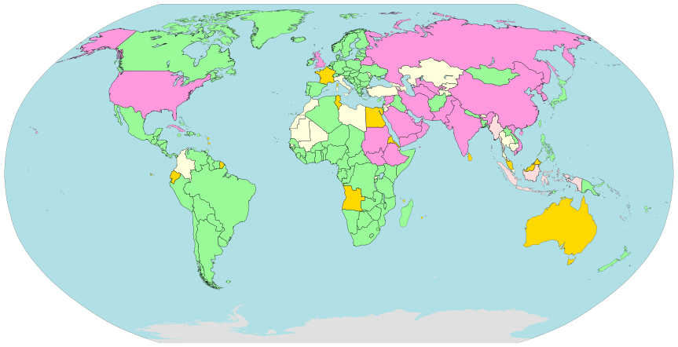

Anonym im Netz mit Tor
von und mit Stefan Leibfarth
Dank an Stefan Schlott für große Teile dieser Präsentation
Diese Präsentation: t1p.de/mi2f
Warum anonym?
Freier Netzzugang

Große Teile der Welt beeinflussen den Netzzugang
Freie Meinungsäußerung
In repressiven Staaten
Kanal für Whistleblower / Presseinformanten
…trifft inzwischen auch uns! (Vorratsdatenspeicherung)
Es geht niemanden etwas an!
Ich habe nichts zu verbergen!
Jeder hat etwas zu verbergen.
Illegal ≠ nicht für die Öffentlichkeit
Gegenwart ≠ Zukunft
Wie funktioniert das Internet?
IP-Adressen: Die Hausnummern des Netzes
Vier Zahlen je 0-255, z.B. 193.7.177.238
Analog zur Polizeiobservation: Paket an Server ≙ Person betritt Mehrfamilienhaus
Hop-by-Hop-Transport
Transporteinheit: Pakete
Keine Verschlüsselung der Inhalte
Keine Anonymisierung von Absender oder Empfänger
Transport von Router zu Router („nach dem Weg fragen“)
DNS: Das Telefonbuch
Abbildung von lesbaren Namen (z.B. www.cccs.de) auf IP-Adressen
DNS-Server kennen dieses Adressbuch
Einige wenige DNS-Server im Rechner vorkonfiguriert
Ergo: Diese wissen sehr detailliert, welche Webseiten man anfragt
…bis hierher schön erklärt bei der Sendung mit der Maus
Die eigentlichen Anwendungen
Auf diesen Mechanismen aufsetzend: Transport- und Anwendungsprotokoll
z.B. www, Mail, etc.
Diese können (anwendungsspezifisch) Details über Benutzer verraten
Wie funktioniert Tor?
Tor: The Onion Router
Exit nodes
- Der Ausgang ins „normale“ Netz
- IP-Adresse der Exit-Node = Vermeintliche Absende-Adresse
- Vorher unverschlüsselte Daten sind hier wieder unverschlüsselt!
- (und können von der Exit-Node gelesen werden)
- Problem in Deutschland: Störerhaftung (Betreiben einer Exit-Node will wohlüberlegt sein)
- Technisches Detail: Nicht jede Exit-Node läßt beliebige Daten nach draußen
Größe des Tor-Netzes
Onion-Services
- Früher: Hidden Services genannt
- Dienste innerhalb des Tor-Netzes, nur hierüber erreichbar
- Erkennbar an .onion-Adresse
- Bauen analog zum Client einen Tunnel bis zu einem „Rendezvous-Punkt“
Onion-Services

Onion-Services
Facebook: facebookcorewwwi.onion/
New York Times: nytimes3xbfgragh.onion/
Duck Duck Go: 3g2upl4pq6kufc4m.onion/
SecureDrop bei 'The Intercept': intrcept32ncblef.onion/
Onion-Name dient gleichzeitig der Überprüfung der Verschlüsselung
Verhindert Abhören der Verbindung
Was anonymisiert Tor?
| Absender-IP-Adresse
| DNS-Anfragen
| Anwendungsprotokoll (das übernimmt z.B. TLS)
| |
Funktioniert Tor?
Mächtige Gegner wie NSA mit umfassender Verkehrsdaten-Analyse
Bis dato keine Hinweise ein Hinweis auf einen erfolgreichen Angriff (Sommer 2014, erkannt, Tor verbessert)
Alle bekannten Fälle: Fehler in der Operational Security
Die Tor Browser
Die Tor Browser
Die einfachste Möglichkeit zur Tor-Nutzung
Tor-Zugangssoftware plus passend eingerichteter Browser
Download für den Laptop / Desktop
https://www.torproject.org/projects/torbrowser.html
Für ernsthafte Anforderungen:
Korrektheit des Downloads prüfen
Download für Smartphones
Warum reicht Tor allein nicht?
Tor allein verschleiert nur die IP-Adresse
Tor Browser: Namensauflösung (DNS) nur über Tor
Tor Browser: Speziell auf Anonymität angepaßt
- IP sonst über Javascript herausfindbar
- Verschleiern von Systeminformationen (Bildschirmgröße, Betriebssystem, etc.)
- Hinweise bei ungeschicktem Verhalten (z.B. Vollbild)
TAILS - The Amnesic Incognito Livesystem
TAILS - The Amnesic Incognito Livesystem
Vorkonfiguriertes Betriebssystem
Start von CD oder USB-Stick
Hilfreich, wenn man dem System sonst nicht vertraut
Hinterläßt auf dem System keinerlei Spuren/Daten
- Festplatte wird nicht angetastet
- Beim Herunterfahren: RAM wird gelöscht
Download
https://tails.boum.org/index.de.html
Webseite: Detaillierter Assistent zur Installation und Prüfung
Anwendungen
Tor-Zugangssoftware
Passend eingerichteter Browser (wie Tor Browser Bundle)
Passend eingerichtetes Chat-Programm
Office-Anwendung, etc.
Optional: Daten speichern
Bei Installation auf USB-Stick: Verbleibender Platz kann optional zum Speichern von Daten genutzt werden
Datenbereich mit Passwort verschlüsselt
Je nach eigener Situation: Potentiell gefährlich, da man nun (vermeintlich?) Daten mit sich herumträgt
Fazit
Verwendung von Tor ist einfach - keine Ausreden mehr!
Tool-Wahl je nach persönlicher Sicherheitsanforderung
Tor ist durchaus fix
Tor ist für jedermann
Verwendung von Tor hilft denen,
die wirklich darauf angewiesen sind
Äni kweschtschens?
Diese Präsentation: t1p.de/mi2fKontakt:
Signal: +49 172 63 43 48 0E-Mail: stefan@leibfarth.org
PGP: F8FC B504 087A C78B 1462 7894 E5CE BB2A C135 4426
Bildquellen
- Anonymous Protest (CC) by-nd-sa Yann Beauson
- Internet Censorship and Surveillance World map CC0 Wikimedia
- World Internet Topology (2007) by AT&T
{kind=link}